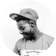
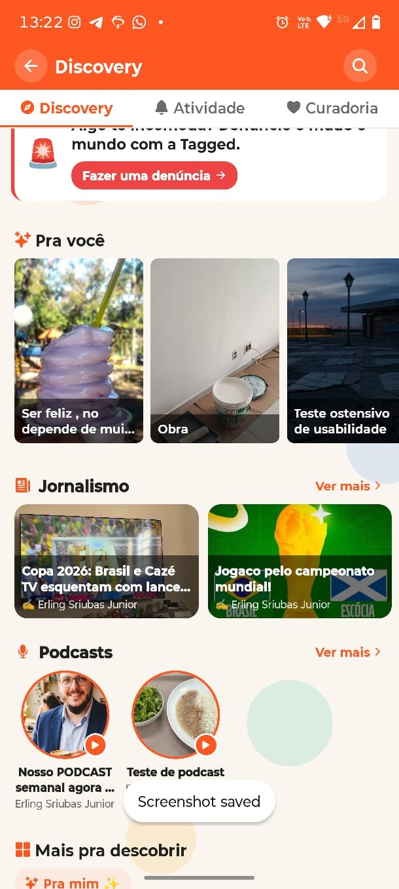
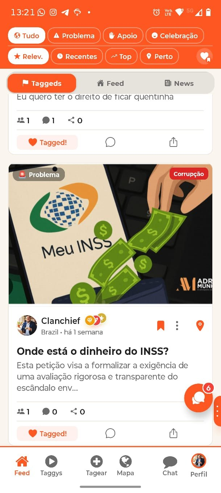
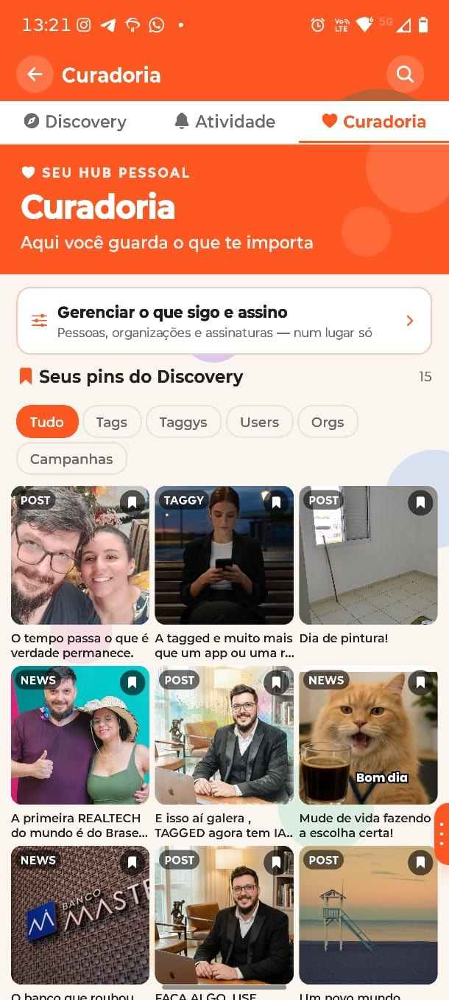

Sua voz · nossa força · muda tudo
Cada post tempeso.cada tag tem propósito.
Não é o algoritmo que decide o que importa, são as pessoas. P2P, pessoa para pessoa. Sem corporação ditando a pauta, com propósito real.

A rede onde sua voz tem peso,
esperando por você. Faça parte da mudança, use
TAGGED.



